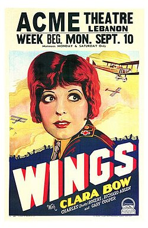
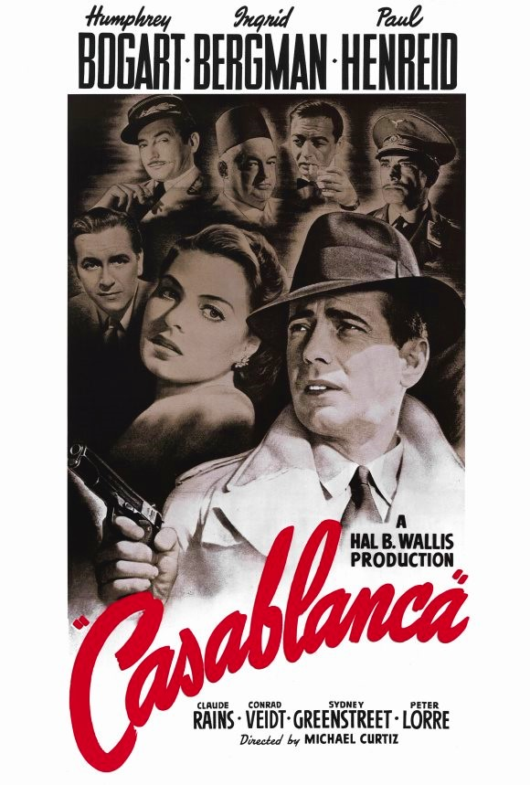
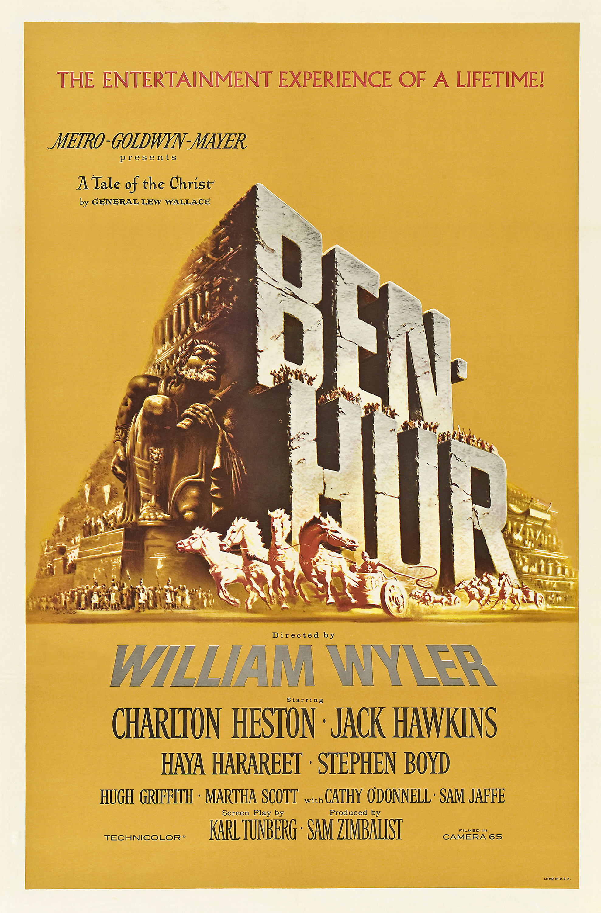
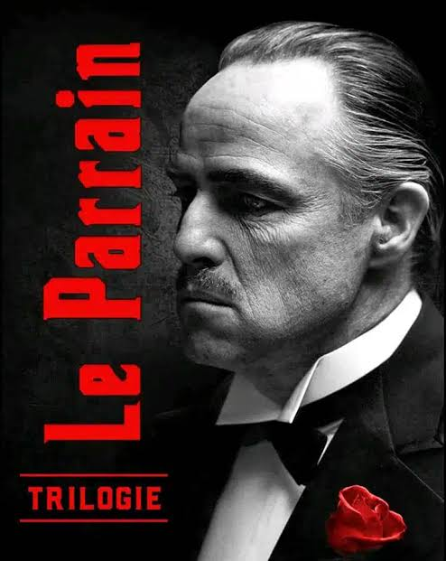
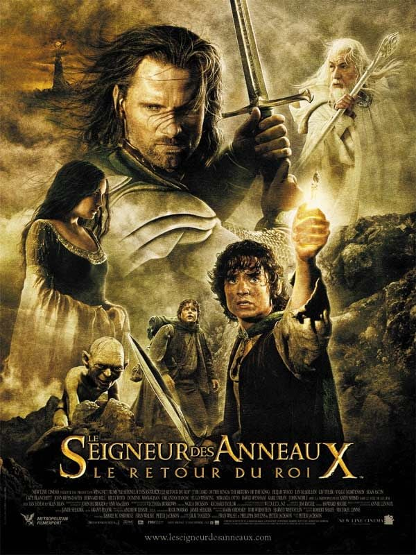
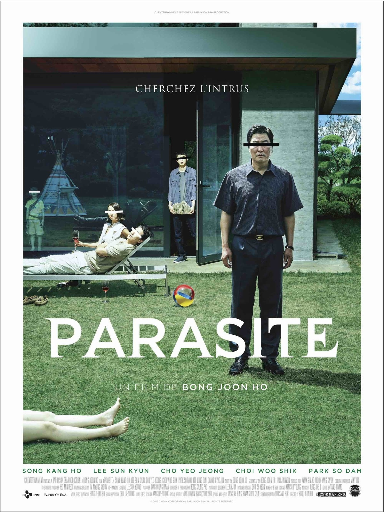
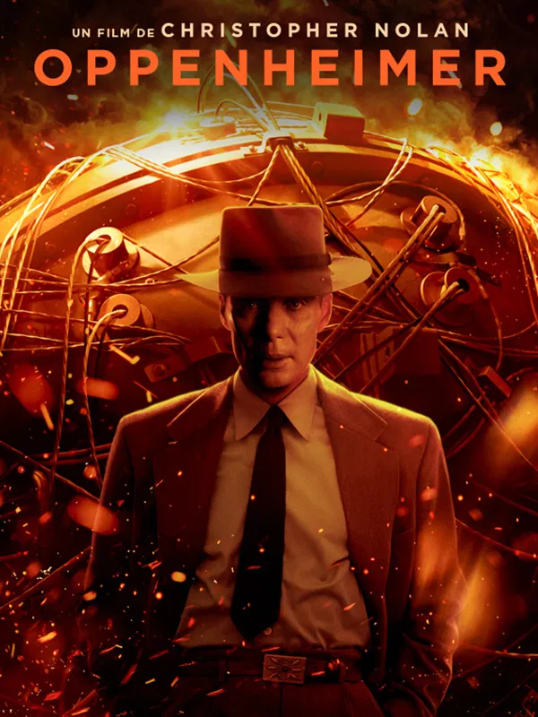

Les Ailes (1929)

Réalisateur : William A. Wellman
Premier film de l'histoire à gagner l'Oscar du meilleur film. C'est un film muet sur deux pilotes de la Première Guerre mondiale.
Casablanca (1944)

Réalisateur : Michael Curtiz | Oscars : 3
Une histoire d'amour et de guerre au Maroc. Il a gagné le meilleur film, le meilleur réalisateur et le meilleur scénario adapté.
Ben-Hur (1960)

Réalisateur : William Wyler | Oscars : 11
Un film géant de la Rome antique, célèbre pour sa course de chars. Il a été le premier à gagner 11 Oscars.
Le Parrain (1973)

Réalisateur : Francis Ford Coppola | Oscars : 3
L'histoire d'une famille de la mafia. Marlon Brando a gagné l'Oscar du meilleur acteur, mais il a refusé de venir le chercher.
Forrest Gump (1995)

Réalisateur : Robert Zemeckis | Oscars : 6
La vie extraordinaire d'un homme simple à travers l'histoire des États-Unis. Tom Hanks a gagné l'Oscar du meilleur acteur.
Titanic (1998)

Réalisateur : James Cameron | Oscars : 11
Une histoire d'amour sur le célèbre bateau qui coule en 1912. Il égale le record de 11 Oscars.
Gladiator (2001)

Réalisateur : Ridley Scott | Oscars : 5
Un général romain devient gladiateur pour se venger. Russell Crowe a gagné l'Oscar du meilleur acteur.
Le Seigneur des anneaux : Le Retour du roi (2004)

Réalisateur : Peter Jackson | Oscars : 11 sur 11 nominations
Le dernier film de la trilogie. Il a tout gagné, ce qui est très rare.
Parasite (2020)

Réalisateur : Bong Joon-ho | Oscars : 4
Une famille pauvre s'infiltre chez une famille riche. Premier film non anglophone à gagner le meilleur film.
Oppenheimer (2024)

Réalisateur : Christopher Nolan | Oscars : 7
L'histoire du père de la bombe atomique. Il a gagné le meilleur film, le meilleur réalisateur, et Cillian Murphy le meilleur acteur.